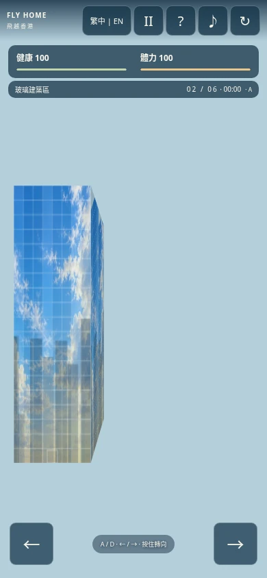
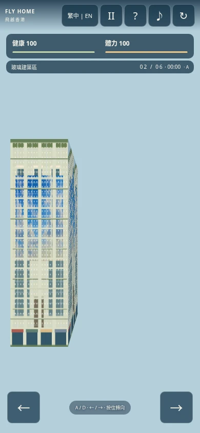
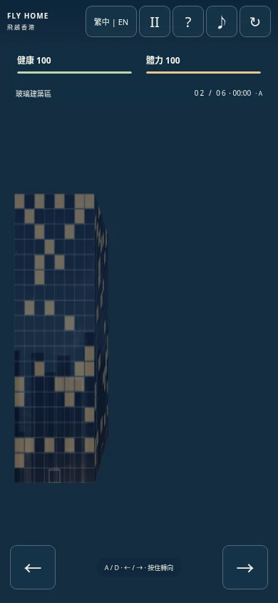
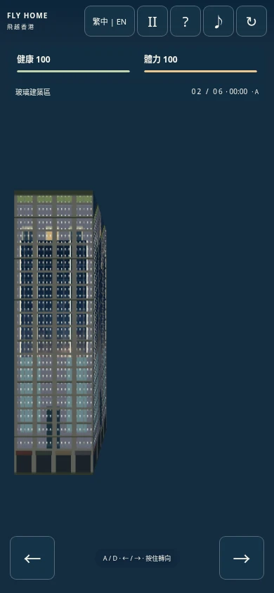
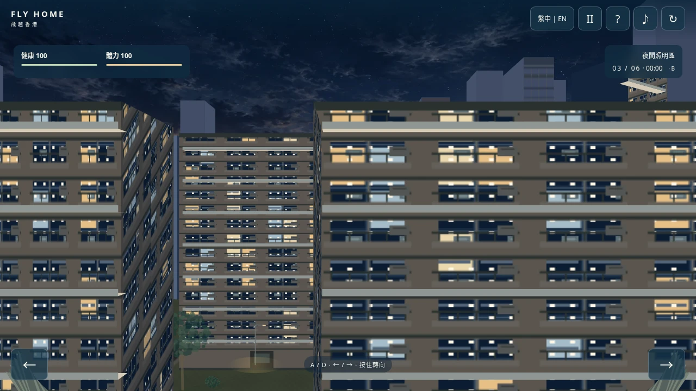
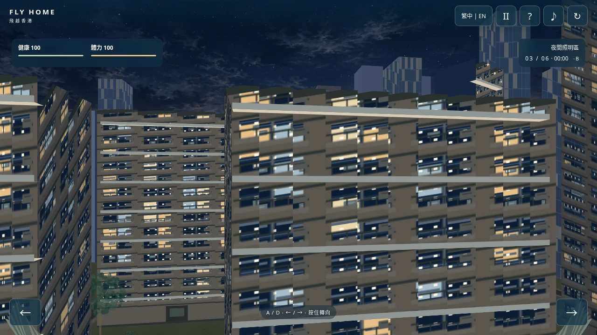
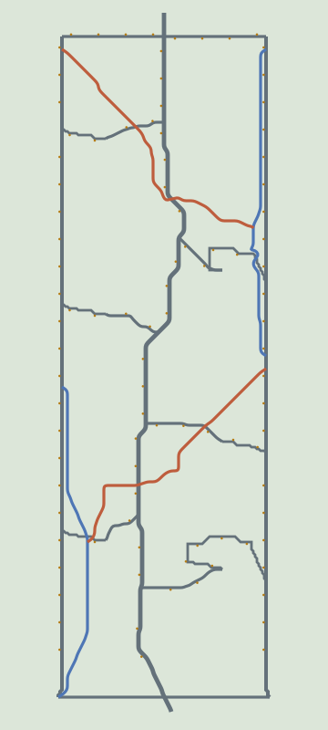

本地 Chromium 验证完成；已测试桌面 1280×720、手机竖屏 390×844、横屏 844×390。未使用实体手机。GitHub Pages 访问被本环境代理以 HTTP 403 拒绝，不能声称已验证线上版本。截图由浏览器原尺寸 PNG 导出 WebP（质量 90，无缩放）。
受控材质展示场景，用于对比立面；不代表普通航路或高架可见性证据。几何和尺寸相同，修改后不再叠加住宅阳台。




固定位置展示相机方向差异。连续输入、快速反向、松开和冻结状态另有自动化检查。
关闭玻璃知识卡后向右进入 C；截图来自同一完整旅程按固定时间步连续推进，没有自由相机。也可在入口接近阶段观察连接匝道。
进入夜间街区，关闭知识卡后向左接近 A。此处包含从白天向夜景的原有渐变；桥梁受真实建筑遮挡，不会穿透显示。
相同位置和尺寸，新版本包含最大右转反馈；旧版本只有横移，没有相机偏航。路灯位置的客观验证另见俯视图和 lighting.json。


灰色：既有道路；蓝色：原外围高架；橙色：新增连接匝道；金色点及短线：灯杆和灯臂。布局固定于世界坐标。

三种屏幕尺寸均通过知识卡、帮助、暂停、双语、A/B/C 入口、触屏、成功/失败、跳过和重启。近裁剪测试：越界屋顶投影 0、天空区域绿色块像素 0，Canvas 状态正确恢复。
| 路线 | 完成生命 | 剩余体力 | 旅程用时（秒） |
|---|---|---|---|
| A | 100 | 15.74 | 144.92 |
| B | 100 | 42.74 | 144.92 |
| C | 100 | 45.80 | 152.22 |
三条完整路线的数据均与本轮基线完全一致；资源数值属于游戏设计。模型自动驾驶证明可完成性，不代表所有玩家都能零碰撞。
每场景预热 20 帧、统计 80 帧 Canvas 绘制 CPU 时间。相同状态与天空；新版本采用最大 8° 偏航，旧版无偏航反馈。不降低渲染尺寸。云端 Chromium 数据不能视为实体手机帧率。
| 屏幕 | 场景 | 修改前均值 / P95 ms | 修改后均值 / P95 ms |
|---|---|---|---|
| desktop | day | 5.00 / 6.10 | 7.18 / 9.80 |
| desktop | night | 4.67 / 5.70 | 8.63 / 11.40 |
| desktop | corner | 4.03 / 5.30 | 6.33 / 8.60 |
| desktop | green | 2.59 / 4.50 | 2.78 / 4.40 |
| desktop | final-edge | 1.80 / 2.90 | 1.15 / 1.80 |
| desktop | final-open | 0.90 / 1.20 | 0.96 / 1.20 |
| portrait | day | 3.98 / 5.40 | 6.73 / 9.70 |
| portrait | night | 3.74 / 4.30 | 5.08 / 7.30 |
| portrait | corner | 3.39 / 4.20 | 5.98 / 8.50 |
| portrait | green | 2.40 / 4.20 | 2.07 / 3.00 |
| portrait | final-edge | 1.31 / 1.60 | 1.01 / 2.30 |
| portrait | final-open | 0.94 / 1.40 | 0.97 / 2.00 |
| landscape | day | 3.77 / 5.10 | 6.67 / 10.80 |
| landscape | night | 3.86 / 5.70 | 4.64 / 6.40 |
| landscape | corner | 3.44 / 4.70 | 5.76 / 8.00 |
| landscape | green | 1.94 / 2.70 | 1.99 / 2.60 |
| landscape | final-edge | 2.00 / 3.40 | 0.91 / 1.40 |
| landscape | final-open | 0.90 / 1.40 | 0.83 / 1.20 |
新增镜头采样、幕墙和桥梁带来开销；当前城市场景平均绘制时间增加约 0.8～4.0 ms。未承诺所有设备达到固定帧率。
browser.json · camera.json · model.json · layout-checks.json · lighting.json · live.json · sequences.json
Canvas 采用对象深度排序、立面条带近似与静态灯光池，极端视角仍有透视近似。移动端仅浏览器模拟，线上未实际验证。完整说明见验证报告。